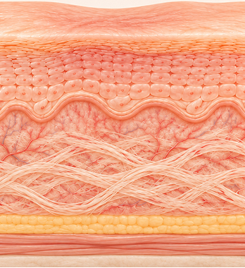
STEP 01
매선 자입
빠른 분해와 효과를 위해 SMAS 층보다 깊은 골막층까지 자입
한방 미용의 시작, 제일한의원입니다.
The First Clinic of Korean Medicine
매선 시술은 몸속에서 서서히 흡수되는 의료용 실을 이용하여
탄력과 리프팅, 약해진 근육·관절 주변에 지지력을 더하는 시술입니다.

빠른 분해와 효과를 위해 SMAS 층보다 깊은 골막층까지 자입
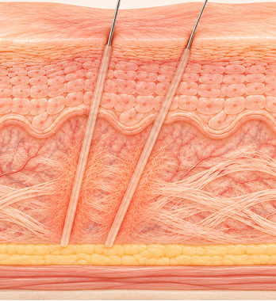
매선이 자입되는 과정에서 세포가 자극되고 인위적으로 상처를 생성
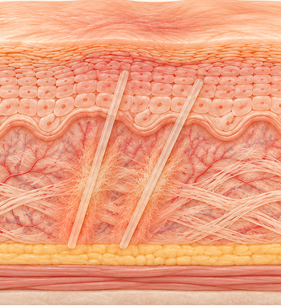
상처 난 세포가 복원하기 위한 세포 재생 및 증식 실시
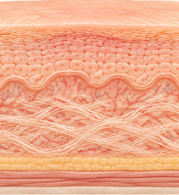
매선이 녹으면서 세포조직 재생 및 증식으로 콜라겐·엘라스틴 생성
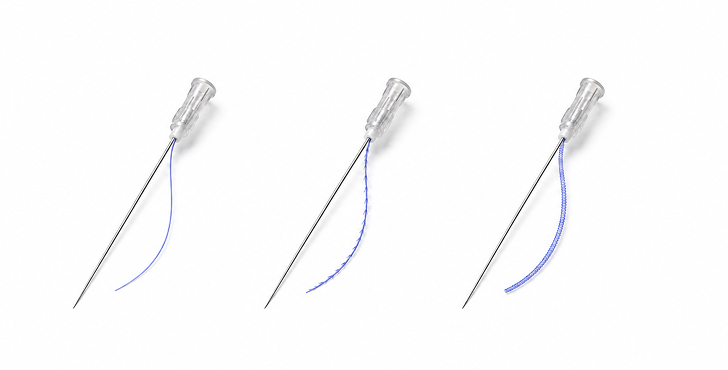
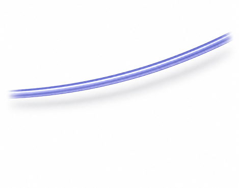
모노매선은 피부 탄력과 리프팅 관리를 위해 사용하는 의료용 실입니다.
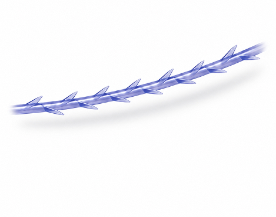
돌기가 있는 코그매선은 약해진 근육·관절 주변 조직의 지지를 목적으로 사용하는 의료용 실입니다.
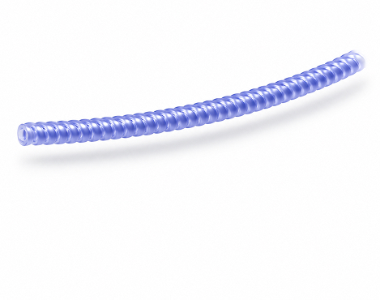
스프링 탄성을 통해 다량의 콜라겐 생성 촉진 효과가 있는 의료용 실입니다.
The First Clinic of Korean Medicine
정안침은 얼굴을 싸고 있는 막(SMAS 근막층)을 침으로 자극하여 안면부 혈류 순환을 개선시키고, 피부가 스스로 회복할 수 있는 힘을 길러줍니다.
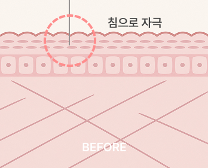
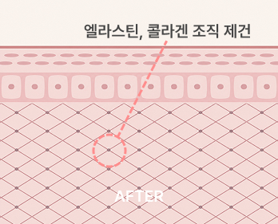
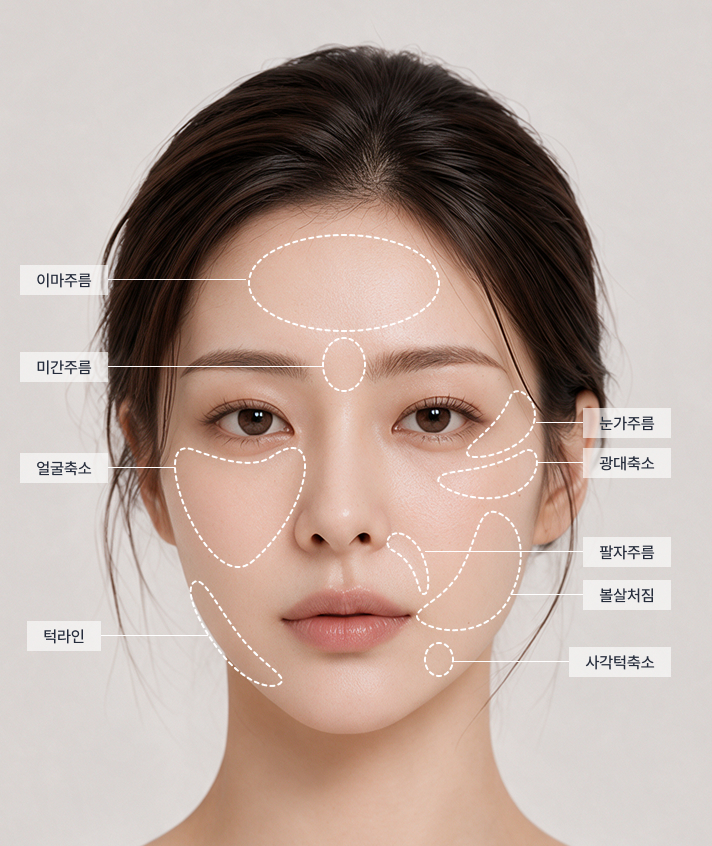
뭉친 얼굴 근육을 풀어주는 효과
갸름한 얼굴 개선 효과
숨어있던 V라인을 찾아주는 효과
원활한 혈액순환 도움
얼굴 부종과 근육형 얼굴 개선
얼굴주위 불필요한 군살 제거
콜라겐, 엘라스틴 생성
리프팅 효과, 잔주름 개선
어둡고 칙칙한 안색 개선
밝고 맑은 안색으로 톤업효과
The First Clinic of Korean Medicine
피부 깊은 층(진피)에 목적에 맞는 성분을 전달해
수분·피부결·탄력 등의 개선을 돕는 시술입니다.
피부 두께와 잔주름의 분포를 살펴 부위에 맞는 주입 깊이와 용량을 정하여 시술합니다.
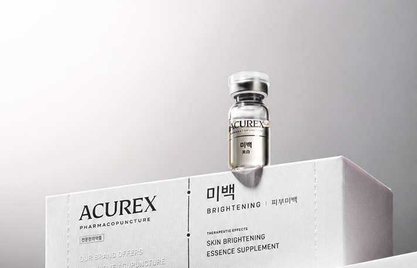
피부톤과 색소 분포, 민감도를 살펴 약침의 적용 여부와 시술 부위·용량을 결정합니다.
The First Clinic of Korean Medicine
체중 숫자만 줄이는 것을 목표로 하지 않습니다. 생활습관, 식사, 활동량, 대사적 건강과 신체 상태를 함께 고려하고, 한약·운동 지도·국소 라인약침·감량 후 탄력을 위한 매선을 개별적으로 검토합니다.
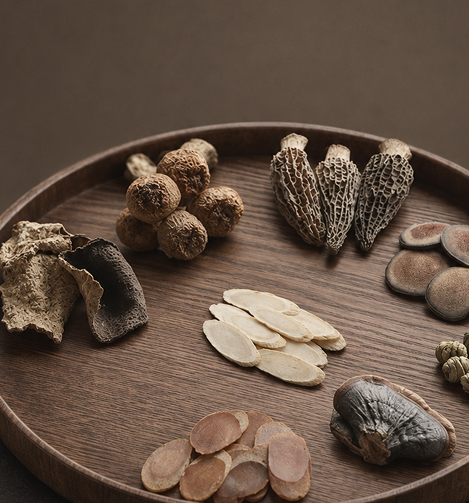
건강 상태에 따라 한약 처방과 전반적인 생활 관리를 통해 체중을 관리합니다.
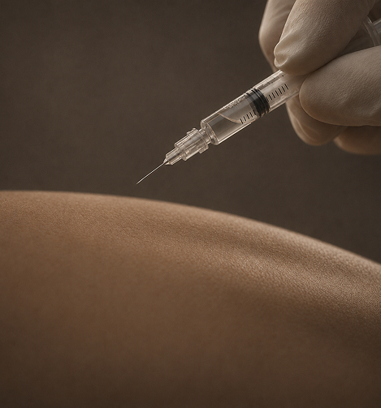
국소 부위의 고민에 따라 라인 약침을 검토하여 시술합니다.
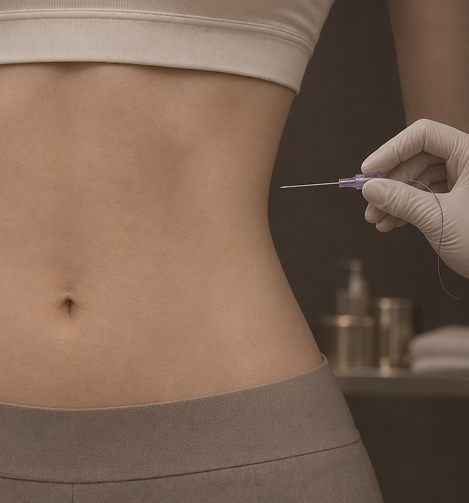
처짐과 탄력 상태에 따른 매선 시술을 검토하여 전반적인 라인이 자연스럽게 정리되도록 합니다.
모든 단계는 체질과 건강 상태를 먼저 확인하고, 한의사가 주기적으로 점검하며 진행합니다.
The First Clinic of Korean Medicine
반세기 넘게 다듬어 온 처방을 바탕으로 체질과 현재 상태에 맞춰 한약을 짓습니다. 피부와 얼굴에 드러나는 피로, 40·50대 호르몬 변화로 인한 노화를 몸 안에서부터 관리해 보세요.
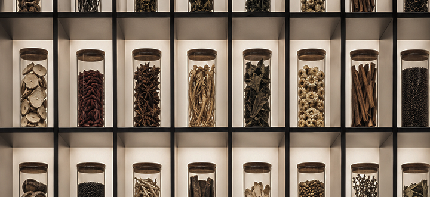
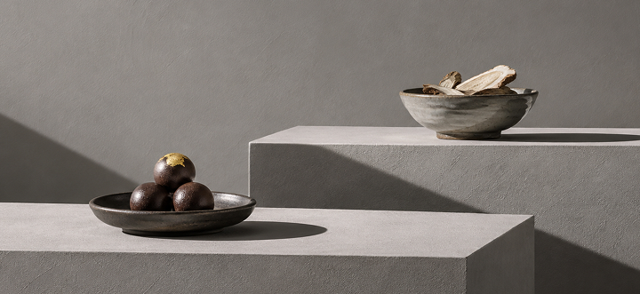
개인별 한약과 녹용한약, 원내에서 직접 조제하는 공진단을 진료 목적과 건강 상태에 따라 안내합니다.
The First Clinic of Korean Medicine
네. 얼굴 윤곽이나 좌우 균형, 피부결·톤·탄력 등 신경 쓰이는 부분을 함께 살펴봅니다. 가장 신경 쓰이는 고민부터 이야기해 주시면 진료의 우선순위를 정하는 데 도움이 됩니다.
매선은 조직에 실을 넣는 시술이고, 정안침은 얼굴 부위에 침을 놓는 방식입니다. 고민 부위와 피부 상태를 살핀 뒤 어떤 방법을 적용할 수 있는지 설명드립니다.
시술 부위와 범위에 따라 다릅니다. 매선 후 멍이나 붓기, 통증이 생길 수 있으니 중요한 일정이 있다면 상담 때 알려주세요. 세안·화장·운동을 언제부터 할 수 있는지도 함께 안내드립니다.
네. 감량 이후에도 신경 쓰이는 부위나 피부 탄력 저하가 있다면 상담할 수 있습니다. 최근 체중 변화와 고민 부위를 살펴 필요한 관리부터 계획합니다.
한약은 현재 몸 상태와 진료 목적에 따라 필요할 때 고려합니다. 평소 식사·소화·수면 상태와 복용 중인 약을 확인한 뒤, 한약 복용 여부를 상담합니다.